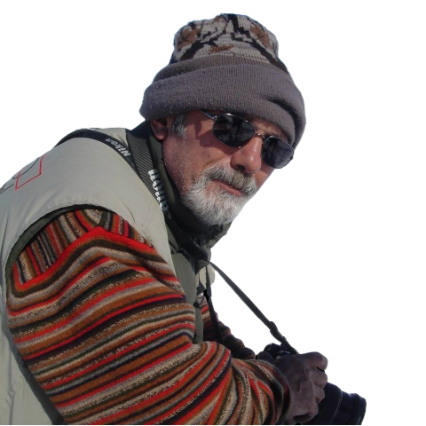

1951 yılında Tokat’ın Niksar ilçesinde doğdu. İlk öğrenimini burada tamamladıktan sonra, ortaöğrenimini Van’da tamamladı. Erzurum Yapı-Sanat Okulu'ndan İnşaat bölümünde mezun olduktan sonra, Ankara’ya taşındı. Film-Radyo-Televizyon Eğitim Merkezi’nde fotoğrafçı olarak uzun yıllar çalıştı.
Çalışma hayatı boyunca karanlık odadan baskıya, iç ve dış çekimlerden belgesel ve tanıtım çekimlerine kadar fotoğrafçılığın her alanında profesyonel olarak görev yaptı. Emekli olduktan sonra, profesyonel fotoğrafçılığa devam ederek birçok firma ve holdingin tanıtım ve katalog fotoğraflarını çekti.
Profesyonel fotoğrafçılığın yanı sıra, amatör olarak Türkiye’nin birçok şehrinde tarihi, kültürel ve doğa güzelliklerini fotoğrafladı. Kültür Bakanlığı başta olmak üzere birçok kurum tarafından düzenlenen fotoğraf yarışmalarında, fotoğrafları ödül kazanmış veya sergilenmeye değer bulunmuştur.
Evli ve iki çocuk babası olan Muharrem Şimşek, halen fotoğraf sanatına amatör olarak devam etmektedir.